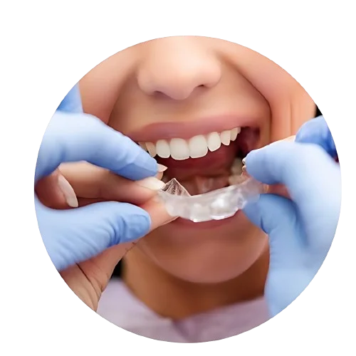

Using a set of clear plastic teeth aligners, Invisalign seamlessly straightens your teeth, offering a modern alternative to traditional braces. Pitner and Carroll Orthodontics in the heart of Columbia, SC, helps you achieve a winning smile with Invisalign. Improve teeth alignment and embrace confidence with comfortable and sleek clear aligners today.
Why Choose Pitner And Carroll Orthodontics For Invisalign?
When it comes to Invisalign, experience matters. At Pitner and Carroll Orthodontics, we bring years of expertise and a passion for perfection to every smile transformation journey.
But it's not just about the numbers; it's about the trust and confidence our patients place in us. We take pride in our track record of successful outcomes and satisfied smiles. From teenagers to adults, we've helped countless individuals achieve the smile they've always dreamed of.

Benefits Of Invisalign
Let's talk about why Invisalign is the clear choice for transforming
your smile.
+
Discreet Appearance
With Invisalign, say goodbye to self-consciousness about your smile during treatment. These aligners are practically invisible, blending seamlessly into your teeth and giving you the confidence to smile freely, whether you’re at work, school, or a social gathering.
+
Comfort and Convenience
Traditional braces can be cumbersome and uncomfortable, but Invisalign offers a different experience altogether. Made from smooth, comfortable plastic, these aligners gently shift your teeth into place without the need for painful adjustments. Plus, they fit seamlessly into your lifestyle, allowing you to carry on with your daily activities without skipping a beat.
+
Efficiency
What sets Invisalign apart is its practicality and efficiency.
Each treatment plan is tailored to your unique dental needs, and
with the help of advanced 3D technology, the results can be
predicted with remarkable accuracy. This means fewer surprises
along the way and a clear understanding of the journey ahead.
Experienced Customized Treatment Process
Orthodontic treatment should be personalized, and our team at Pitner and Carroll Orthodontics excels in this with advanced Invisalign technology. Here's how our customized treatment process sets us apart:
+
Comprehensive Consultation
Starting with an initial consultation, our orthodontists, Dr. Leslie Pitner and Dr. Marshall Carroll, leverage their expertise and years of experience to assess your teeth and recommend optimal solutions. We attentively listen to your concerns and goals, ensuring you feel confident and well-informed throughout your orthodontic journey.
+
Digital Scanning
Say goodbye to messy, uncomfortable putty impressions. With our
advanced digital scanning technology, we create virtual 3D models
of your teeth that can be manipulated using computer-aided design
(CAD) software to create a treatment plan. Traditionally, creating
manual clay models takes weeks, but digital impressions are ready
in about a few minutes.
+
Treatment Planning
Depending on the degree of alignment correction necessary, you may
have only a few tray sets or as many as 70 or more in your
treatment plan. Each tray set is designed to apply specific
pressure to your teeth gently but firmly. As you shift from one
tray set to the next, you may notice a slight difference in where
the pressure is applied.
+
ClinCheck® Software
Visualizing your final results before treatment begins is now
possible with Invisalign’s ClinCheck® software. This powerful tool
allows us to meticulously map out the movements of your teeth
throughout the course of treatment, giving you a clear
understanding of what to expect and allowing us to make any
necessary adjustments along the way.
+
SmartTrack® Material
Invisalign will create your first set of custom aligners using a
unique polymer called SmartTrack® material. This particular
polymer is unique to Invisalign aligner trays. Researchers tested
more than 260 materials over eight years to develop the SmartTrack
material.
Invisalign For All Ages
Invisalign is suitable for patients of all ages, from children and teens to adults. Whether you're a parent seeking orthodontic solutions for your child or an adult looking to enhance your smile, Invisalign offers versatility to address a wide range of orthodontic needs.
+
For Kids
The American Association of Orthodontists (AAO) recommends that
kids visit an orthodontist at seven years old, whether or not
there are visible signs of misalignment. Guiding teeth to their
proper positions during the development stage is crucial to
avoiding lengthy and invasive treatments in the future.
+
For Teens
The teenage years mark a crucial stage in dental development,
making orthodontic intervention essential for guiding teeth to
their proper positions. Thankfully, Invisalign Teen is designed to
address the unique needs and preferences of teenage patients,
offering a discreet and convenient alternative to traditional
braces.
+
For Adults
In adulthood, achieving a straighter smile is not just about
aesthetics; it’s also about improving oral health and overall
well-being. As such, adults seeking orthodontic treatment often
prioritize options that offer discretion, comfort, and
convenience.
Invisalign Cost And Financing:
+
Transparent Pricing
We believe in transparency when it comes to the cost of Invisalign
treatment. Our team provides clear and detailed information about
the pricing structure, ensuring patients understand the investment
required for their orthodontic journey.
+
Flexible Financing Options
To make Invisalign treatment more accessible, we offer a range of
flexible financing options tailored to meet individual budgetary
constraints and preferences. Whether through monthly payment
plans, third-party financing, or insurance coverage assistance,
our goal is to ensure that cost does not stand in the way of
achieving a confident and healthy smile.
+ Additional Financing Options
Flexible Spending Accounts (FSA) and Health Savings Accounts
(HSA): An FSA enables individuals to set aside pretax dollars from
their salary specifically for healthcare expenses. It’s important
to note that funds in an FSA do not roll over, so it’s advisable
to utilize them before the end of the year. HSAs, meanwhile, can
roll over into the following year, providing greater flexibility.
However, HSAs require individuals to have a high-deductible
insurance plan.
Frequently Asked Questions (FAQs)
Is Invisalign treatment painful?
Invisalign treatment is generally not painful. Patients may experience
some discomfort or pressure when transitioning to a new set of
aligners, which is normal and indicates that the treatment is working.
How long does the Invisalign treatment take?
The duration of Invisalign treatment varies depending on individual
needs and treatment plans. On average, treatment can last between 12
and 18 months, but this timeline may be shorter or longer based on the
complexity of the case.
Are there dietary restrictions with Invisalign?
Unlike traditional braces, Invisalign aligners are removable, allowing
patients to eat and drink comfortably without restrictions. However,
it’s essential to remove the aligners before consuming anything other
than water to prevent damage or staining.
How often do I need to wear my Invisalign aligners?
For optimal results, aligners should be worn for 20 to 22 hours per
day, removing them only for eating, drinking, brushing, and flossing.
Consistently wearing aligners as prescribed ensures effective
treatment progress.
Can Invisalign correct severe orthodontic issues?
Invisalign is suitable for treating a wide range of orthodontic
issues, including mild to moderate cases of misalignment, crowding,
gaps, overbites, and underbites. However, severe cases may require
alternative treatment options.
BOOK AN APPOINTMENT TODAY
SOUTH TRUST TOWER, 1201 MAIN ST #900 COLUMBIA, SC 29201
You can begin your journey towards that dream smile by scheduling your free consultation at one of our three convenient locations: Chapin, Downtown, or Columbia, SC.

.svg)
.webp)